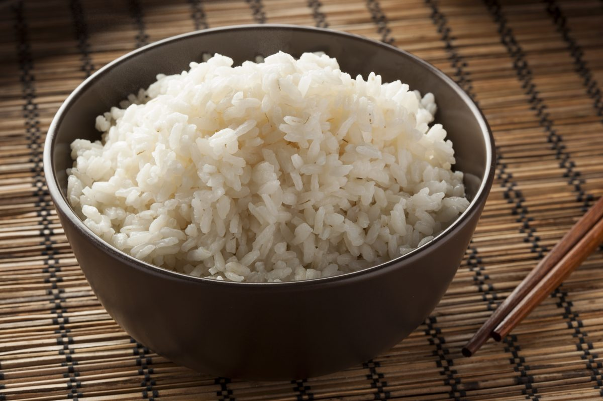

Rice, rice, baby!

Making yummy rice is easier than you think.
To make a bowl of rice, you need a pot, a strainer, a spoon, and a stove.
Follow the recipe and you should not fail!
INGREDIENTS:
STEPS:
- Put rice in pot
- Pour water over rice
- Strain water
- Repeat steps 2 and 3 eleven times
- Indent a hole in center of rice
- Pour water until it reaches middle phalanx
- Put water to boil
- Stir
- Cover with a lid
- Put heat on lowest setting
- Let cook for 10 minutes
- Without lifting the lid, turn stove off and let steam for five minutes
- After five minutes, lift the lid and fluff the rice with a fork
- Enjoy your perfect bowl of rice!